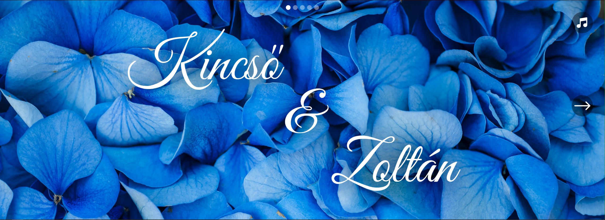
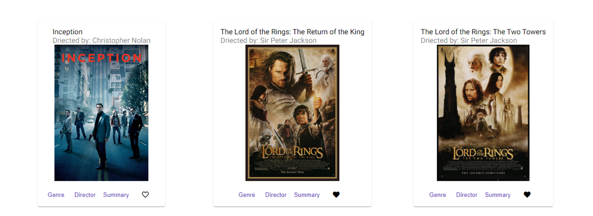
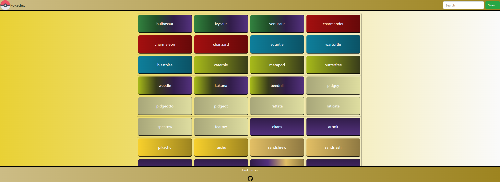
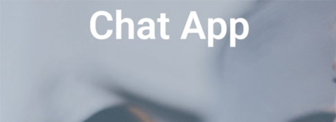

Projekten
myFlix-React

Ein allein erstelltes Projekt, bei dem sowohl die Serverseite als auch die Benutzeroberfläche vom Grund auf neu entwickelt wurden. Benutzer können Informationen über Filme abrufen, um mehr über Filme zu erfahren, die sie gesehen haben oder an denen sie interessiert sind.
Hochzeitseinladung
Ich habe eine React-Hochzeitseinladung mit Musik entwickelt. Die ersten drei Ansichten sind so gestaltet, dass sie auf Bildschirmgrößen von Handy bis Desktop-PCs ohne Scrollen passen. Ich habe mit einem UI-Designer für dieses Projekt zusammengearbeitet.
myFlix-Angular
Ein allein erstelltes Projekt, bei dem ich die Benutzeroberfläche mit Angular für die REST-API entwickelt habe. Diese API wurde zuvor für die Verbindung mit ‘mxFlix-React’ und einer MongoDB-Datenbank verwendet. Die Webseite ist gestaltet, um Benutzerregistrierung, Einloggen, Filme mit Beschreibungen anzusehen und andere relevante Daten von Datenbank abzurufen, Benutzer das Speichern von Filmen als Favoriten zu ermöglichen, sowie Möglichkeiten zur Account-Bearbeitung und Löschung zu anzubieten.
Meet App

Die Webseite ist so gestaltet, dass sie Events in der Nähe für die Benutzer in den ausgewählten Städte anzeigt. Es war ein allein erstelltes Full-Stack-Projekt. Es verwendet React für die Benutzeroberfläche, AWS Lambda als serverlose API und ruft die Daten über die Google Calendar API ab. Der Entwicklungsprozess hat einen test- und verhaltensgetriebenen Ansatz verfolgt.
Pokédex
Es ist eine allein erstellte JavaScript-Frontend-Webseite, die eine externe API verwendet. Der gesamte Inhalt wird mit JavaScript-Funktionen generiert. Die Schaltflächen sind nach Pokémontypen gefärbt. Zusätzlich wurde eine Suchleiste implementiert, damit Benutzer nach einem spezifischen Pokémon suchen können, indem sie dessen Namen eingeben.
Chat App
Die Chat-App ist eine React Native App für Handys. Es handelt sich um einen kollektiven Chat, bei dem jeder Benutzer miteinander kommunizieren kann. Sie wurde für Android mit Expo und Android Studio entwickelt, ist aber auch auf iOS nutzbar.